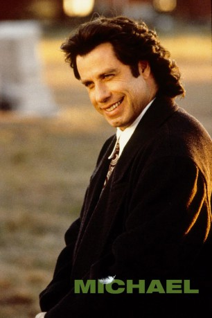
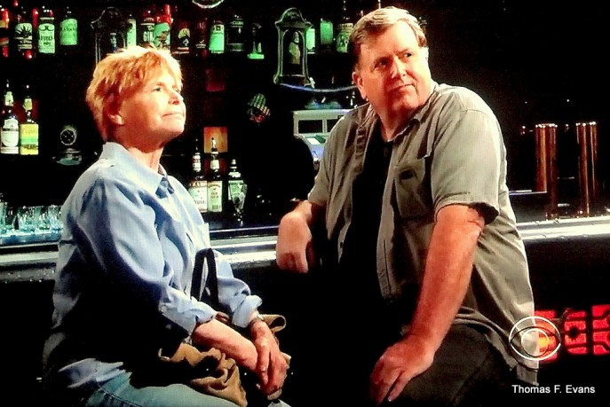
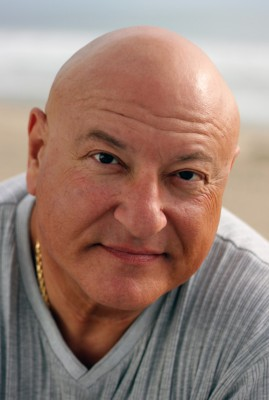

#11114 Michael
 
 IMDB-Wertung: 5.7 / 10
IMDB-Wertung: 5.7 / 10  Tomatometer: 38
Tomatometer: 38  Metascore: 38
Metascore: 38 
Frank Quinlan und Huey Driscoll arbeiten für ein wöchentliches Sensationsblättchen, doch aufgrund mangelnder Ideen, ist ihr Job allmählich in Gefahr. Da erreicht sie die Nachricht, daß bei einer alten Frau in Iowa der Erzengel Michael zur Untermiete wohnt. Zusammen mit einer angeblichen Engelexpertin, Dorothy Winters machen sie sich auf den Weg, doch Michael entpuppt sich als anders als erwartet. Seine Manieren sind unterdurchschnittlich, er raucht und trinkt und pflegt ein regel Sexualleben. Für die Story erklärt er sich bereit, mit nach Chicago zu kommen, doch nur per Auto. Der Trip wird alle Beteiligten stark verändern...
Jahr: 1996
Dauer: 100 Minuten
FSK: 6
Land: USA Studio: New Line CinemaTonspuren: DD5.1 - ,
Untertitel:
Auflösung: 1080p (1920x1080) Größe: 4485 MB
Genre: Drama, Komödie, Fantasy
Regisseur: Nora Ephron
Drehbuch: Peter Dexter, Jim Quinlan, Nora Ephron, Delia Ephron, Peter Dexter
Soundtrack: Randy Newman
Darsteller:
 John Travolta als Michael
John Travolta als Michael Andie MacDowell als Dorothy Winters
Andie MacDowell als Dorothy Winters William Hurt als Frank Quinlan
William Hurt als Frank Quinlan Bob Hoskins als Vartan Malt
Bob Hoskins als Vartan Malt Robert Pastorelli als Huey Driscoll
Robert Pastorelli als Huey Driscoll- Jean Stapleton als Pansy Milbank
 Teri Garr als Judge Esther Newberg
Teri Garr als Judge Esther Newberg Wallace Langham als Bruce Craddock
Wallace Langham als Bruce Craddock Joey Lauren Adams als Anita
Joey Lauren Adams als Anita Carla Gugino als Bride
Carla Gugino als Bride- Tom Hodges als Groom
- Catherine Lloyd Burns als Evie
 Richard Schiff als Italian Waiter
Richard Schiff als Italian Waiter- Calvin Trillin als Sheriff
- JoAnn Fregalette Jansen als Tammy
- Tracey A. Doyle als Reporter #4
- Blue Deckert als Joe
- Dianne Dreyer als Jennifer
-  Thomas F. Evans als Reporter #5
-  Dominic Paolo Testa als Motorist (uncredited)
 Tom Woodruff Jr. als Bull (uncredited)
Tom Woodruff Jr. als Bull (uncredited)- Donald J. Lee Jr. als Court Bailiff
- David Harrod als Mal
- Jane Lanier als Suzanne
- John Hussey als Minister
- Margaret Travolta als Reporter #1
- David M. Bernstein als Reporter #2
- Betsy Sokolow als Reporter #3
- Deborah Nunez als Woman #1
- Dell Aldrich als Woman #2
- Kay Colvin als Woman #3
- James N. Harrell als Old Geezer #1
- Peyton E. Park als Old Geezer #2
- Tim Harrison als Slacker #1
- Daniel Mimura als Slacker #2
- Mark Nutter als Counterman
- Jimmy Borto als Igloo Wrangler (uncredited)
- Stephen Bruton als Musician in Bar Scene (uncredited)
Datei: X:\1996\Michael (1996, FSK6, 1920x1080).mkv seit 24.04.2019
Festplatte: HD 1996-2002
 Es gibt insgesamt 78 Filme in der Gruppe '1996'
Es gibt insgesamt 78 Filme in der Gruppe '1996'